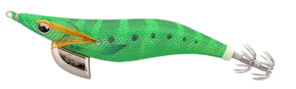
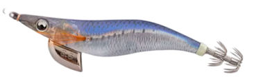
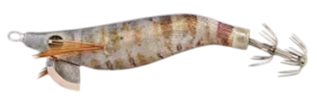
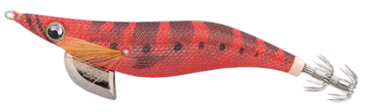
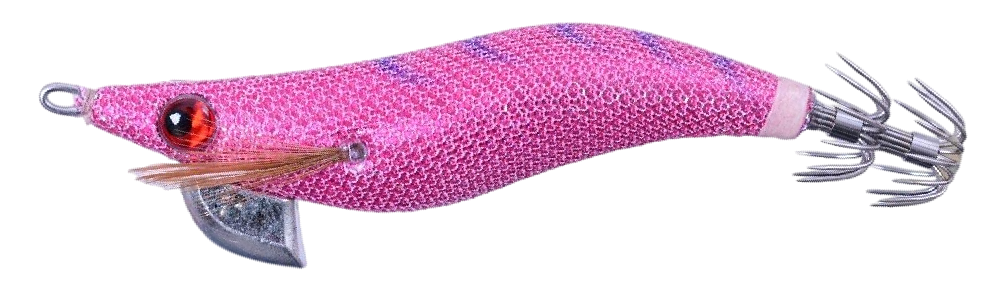
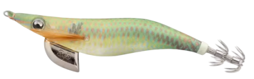
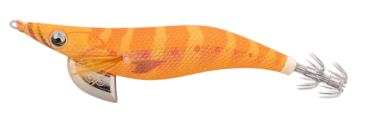
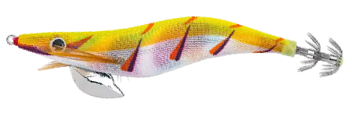

| Condición | Color de Agua | Momento del Día | Colores Recomendados | Notas / Efecto Visual |
|---|---|---|---|---|
| ☀️ Día soleado | Agua clara | Pleno día |

Verde

Azul
 Plateado
Plateado

Natural
|
Imitan presas reales; evitan el exceso de brillo en días soleados. |
| ☁️ Día nublado | Clara o ligeramente teñida | Mediodía / tarde |
 Naranja
Naranja
 Rosa
Rosa
 Violeta suave
Violeta suave
|
Los colores vivos destacan con menor luz solar. |
| 🌅 Amanecer / Atardecer | Agua clara | Baja luz |

Rojo translúcido
Naranja
 Dorado
Dorado
|
Reflejan tonos cálidos del entorno. |
| 🌙 Noche con luna | Agua clara | Noche |
Rojo translúcido
 Rosa claro
Rosa claro

Violeta
|
Simula bioluminiscencia suave. |
| 🌑 Noche sin luna | Agua oscura o turbia | Noche |

Glow verde
 Glow blanco
Glow blanco

Glow naranja

Glow amarillo
|
Colores luminosos para máxima visibilidad. |
| 🌊 Agua muy turbia | Oscura o verdosa | Cualquier hora |
Glow amarillo
Glow naranja
|
Máximo contraste en aguas sucias. |
Aprende a elegir el color adecuado para tus EGI según la luz, la claridad del agua y el momento del día. Esta guía de Egis Low Cost está diseñada para ayudarte a maximizar tus capturas seleccionando siempre el color óptimo para cada situación. ¡Pesca con inteligencia y mejora tus resultados!